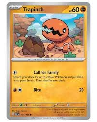
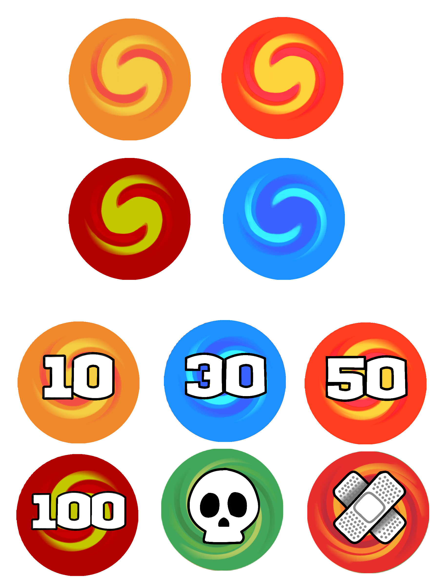
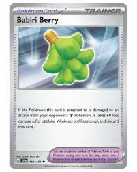
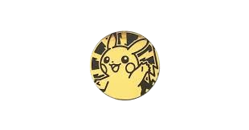

The word basic is next to the name on the top left. Mean that is the only card that can be played for the battle. The number on the top right is the health of Pokémon. Under the picture of the Pokémon is the type it is. The symbol near the Delta Edge is the type of energy card that is needed to use the move. This will make the player turn end when they do an attack. The first turn will skip the player from attacking. When it has a white with a star, then any type of energy card can be used. When it is just gray blank, that means no energy cards need it to be used to attack. When Pokémon's weakness is the same type as the Pokémon that is attacking, then use the multiplier that is next to it. If it's resistance, then subtract any number that it tells the player. Weaknesses are calculated before resistance. The number 70 is how much damage it does. A basic Pokémon can evolve to the next stage, but if it has a third, then it can evolve until the player's next turn. All damage that was in the past stage still stays on that Pokémon. All the effects that were on the last stage end and don't stay on it after it evolves. When a Pokémon is asleep the turn it 90 degrees counterclockwise. This means the Pokémon can't attack and retreat. Then the player can do a checkup by flipping the coin, and if it is head then the Pokémon wakes up. When the Pokémon is confused, the Pokémon card will be flipped upside down. Then, before the player can attack, they must flip the coin. If the coin is headed, then the Pokémon attack works. If it is not a head, then the Pokémon take three 10 damage tokens. The Pokémon will still stay confused with any flip they get. When the Pokémon is Paralyzed, then flip it 90 degrees clockwise. Then, during the checkup, turn it back to normal if it has been like that at the beginning of the last turn. All types of flip can only have one type of Pokémon. The player can't evolve Pokémon in the first turn of the game. Some Pokémon have an ability; just make sure to read what it does or needs to do for the person to use the attack. Some abilities are always active. Abilities aren't attacking, so players can still attack. Bench Pokémon and battling Pokémon that have an ability can still be used on the Pokémon that is battling.

The energy cards are used to make sure to do Pokémon moves. They are placed behind the Pokémon card that is attacking the other players. They just need to match the same symbol that the card is showing next to the move that they want to use. The player can only attach the energy to Pokémon in one turn. When players want to retreat a Pokémon, it will explain how many energy cards they need to discard for it to be removed. If it doesn't have any, then the player can do it for free.

The damage token is to keep track of damage. Every time a player uses a move that causes damage. It shows how much damage it will cause to Pokémon. The player adds, however, a lot of damage to the card. When the amount of damage is equal to or more than the health of a Pokémon, then that Pokémon is down. The green is for knowing if the Pokémon that is in the flight is poison. At the beginning of the player's turn, it will take one 10 damage token The player will not flip a coin. The band-aid is for when a Pokémon is burned, and during a checkup, place two damage tokens that will be the number 10. Then the player can flip the coin to see if it passes, and it needs to be heads. Poison and the burned damage can both be on a player Pokémon, and even when a Pokémon has a type of flip position. The order of checkup for each effect is poisoned, burned, asleep, paralyzed, and other abilities.

This is for use to help players during the flight. This is just used for doing what the card says on it. After using it, make sure to put it in the discard pile. Then, at the bottom of it have a rule that explains what the player can't do with it. Some trainer cards are stadium, and then that card doesn't get discarded when using it. Only one stadium card can be played. So, when another player places a stadium then last stadium gets discarded and replaced by the new stadium. If the stadium has the same name, then it can't be replaced. The trainer card that has a support type can't be placed in the player's first turn. Only one of these can be placed with a Pokémon card, and it can't be replaced with a different one.

This is used to decide which player goes first. Just making sure that one play pick one side of the coin. It can be any type of coin. This coin also helps deal with the different effects that